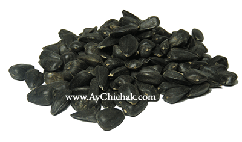

تخمه آفتابگردان آجیلی (خوراکی)
ویژگی های تخمه آفتابگردان تولیدی :

- تولید شده از بار مرغوب و تازه
- محصول یکدست، هم سایز و هم رنگ (سایز روی سرند 8)
- پوکه گیری شده (با خلوص 99/9 درصد)
- سنگ گیری شده (با خلوص 100 درصد)
- رطوبت مناسب (با خلوص 99/9 درصد)
- قیمت مناسب به دلیل حذف واسطه ها و خرید مستقیم از کشاورز